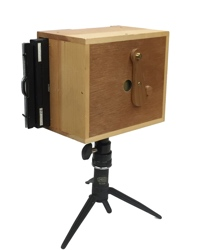

Worldwide Pinhole Photography Day 2021
Sunday, April 25
|
Remains of our son's Eagle Scout Project, after wintering over in the back yard. Photographers around the world join together in collaboration on the last Sunday of April each year, to celebrate the low-tech fun of pinhole photography. A bit of googling will give you plenty to read, and view. All are welcome to participate, and there is one primary rule for inclusion in the official online WPPD gallery. The image you submit must have been made with a pinhole camera on the appointed day, which fell on April 25 in 2021. | ||
| 2021 was my second year of participation, and I again used a camera I had designed and built. Unlike in 2020 though, this camera was functionally complete, if not finished, on the appointed day. The exposure was made on Ilford's HP4 black and white film. | ||
|
Click here for more details on my 6x17 WPPD 2021 camera. |

|

|
|---|---|---|
| I still haven't processed any film from the 6x17 camera, so I also made a 4x5 exposure of our future patio, using a sheet of expired TMax 100. This exposure calculated at 3 minutes at f205, and doubling that to 6 minutes was still not enough for the sensitivity losses due to reciprocity and age. |  | 
|
|
Will there be a new camera for 2022? Only time will tell. | ||
Copyright 2021, Thayer Syme
All rights reserved